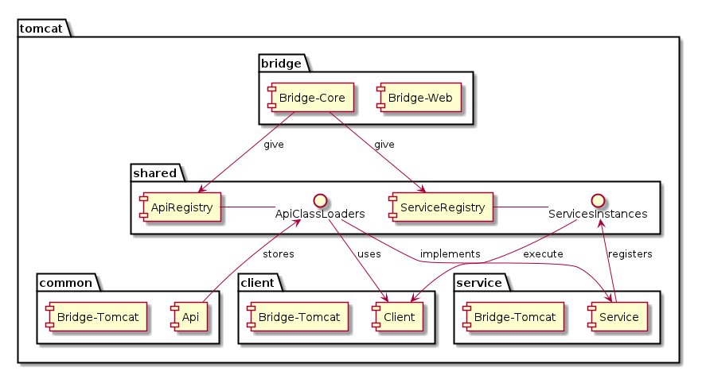
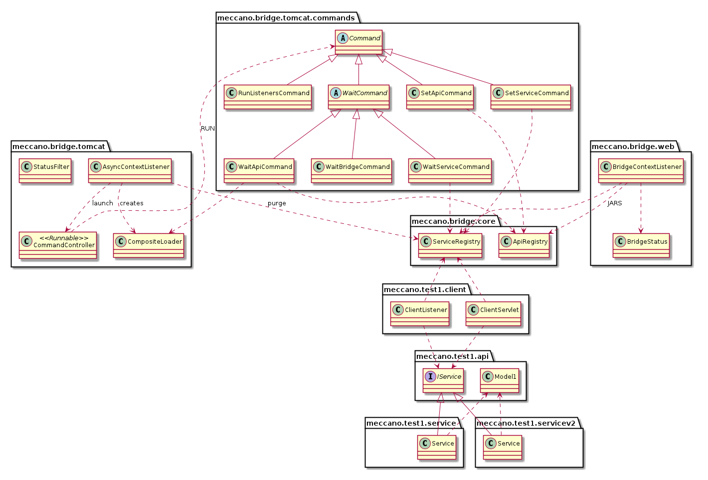
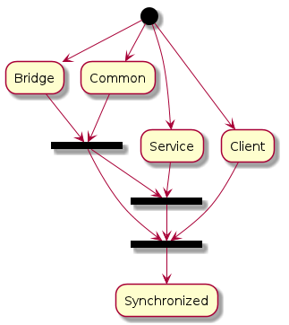
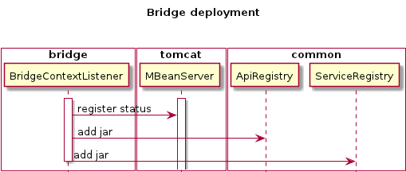
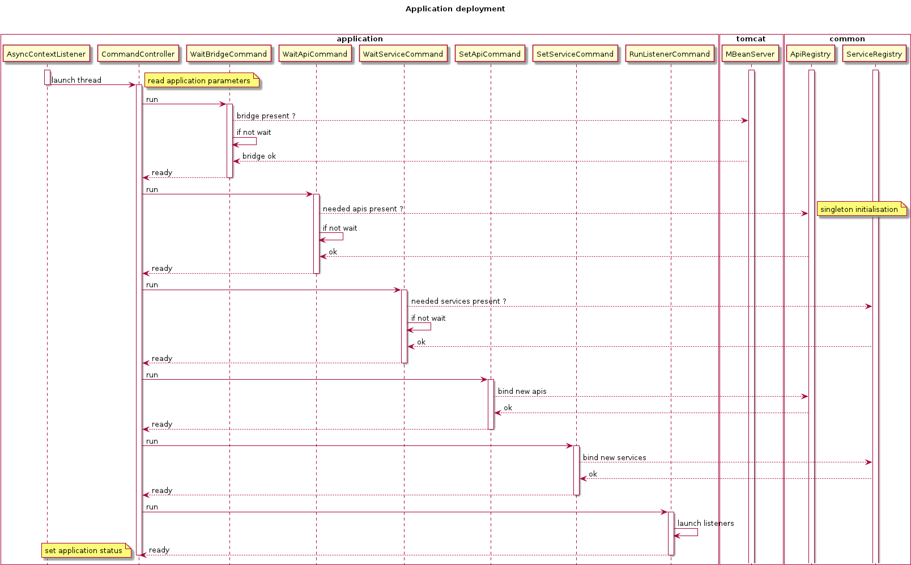

Storing services instances in a registry and access them with a Service Locator is a well know pattern, but in the servlet case we face 3 problems :
Each api is registered as a new classloader in the registery. The applications classloader adds a lookup in this classloader before proceeding the normal lookup (webapp then shared).
In order to wait for dependant parts, the application start launches a thread waiting for components. A sequence of optional commands is executed : wait for the bridge, wait for api's appearing in the api registry, wait for services in the service registry, adding api's in the registry, adding services. Parts become available as the sequence goes along. At the end a status is set, opening access to the application is every steps ran fine.
Instead of putting registries in the shared Tomcat path, wich suppose access to the configuration, an application (the bridge) does this job, giving registries availables to other parts. The Tomcat MBean server is used, via a status MBean to notify dependant applications that the bridge (the singleton registries in fact) is set.
Component view :

Core module brings registries (lazy singletons) via web wrapper;
Tomcat module setup custom asynchronous listener (with commands) and CompositeLoder;
A final application is mainly business classes and configuration (cf examples).
Class view :

Not illustrated here are the web context to store status and so on, and the MBean server used by BridgeStatus and WaitBridgeCommand.
The CompositeLoader is inserted before WebappLoader to lookup in api registry before normal lookup.
Activity view :
The commands sequence ensure synchronisation.
Sequence diagrams :
 An executor is used to ease the shutdown of a failed application and for a future server level management